Today, I collated a large variety of esports material from numerous sources on the Internet to produce three initial moodboards. These cover the common themes of games with competitive and official esports series, examples of various esports organisation logos, and a plethora of pre-existing esports website.
In producing these moodboards, I am able to establish a visual and creative direction for the project. I intend to adapt an esports website into a kiosk which would be featured at an esports event and/or exhibition for the series. While I'm still undecided on the game, I'm leaning towards Rocket League, having researched the various options for competitive gameplay.
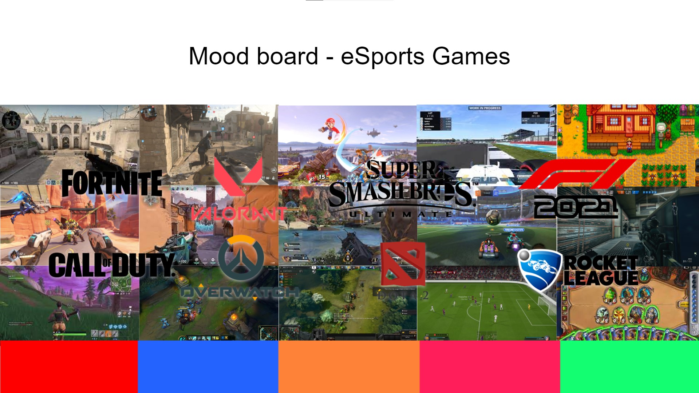
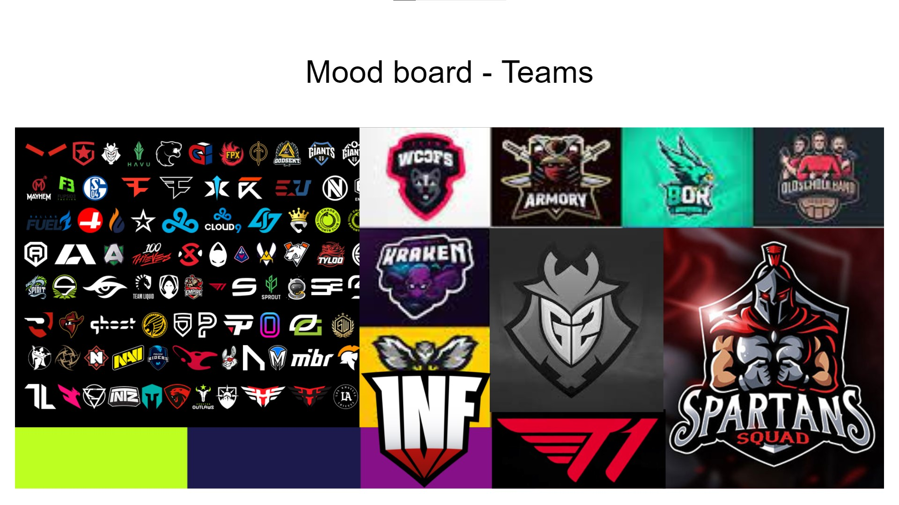
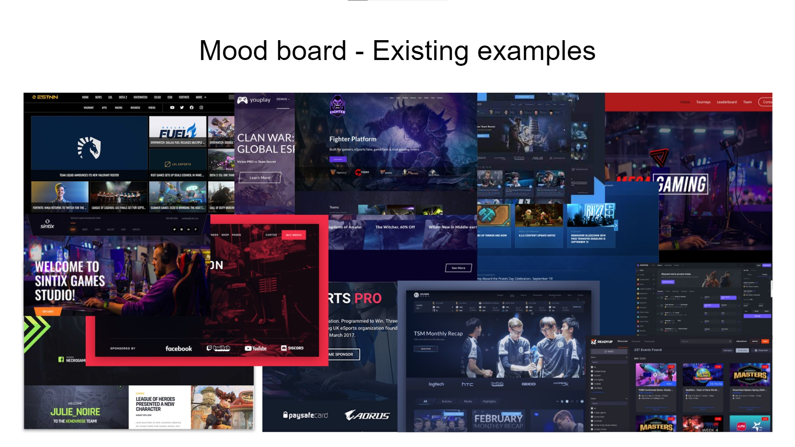
With an initial creative and visual direction established, the next step was to produce an initial mindmap. The purpose of this document is to lay out the details of the esports series itself, the pages and features of the product (kiosk) and further reinforce the creative direction of the product through colour palettes and such.
Furthermore, I began to explore the user experience and layout of the product with a couple of wireframes drawn on paper. I prefer to stick to the basics when producing wireframes - with a pencil and some paper - as to not overcomplicate this step. It is easy to exhaust too much effort on what is merely a layout of the various interface elements, so I wanted to keep it simple and elaborate with the visualisation diagrams which will follow..
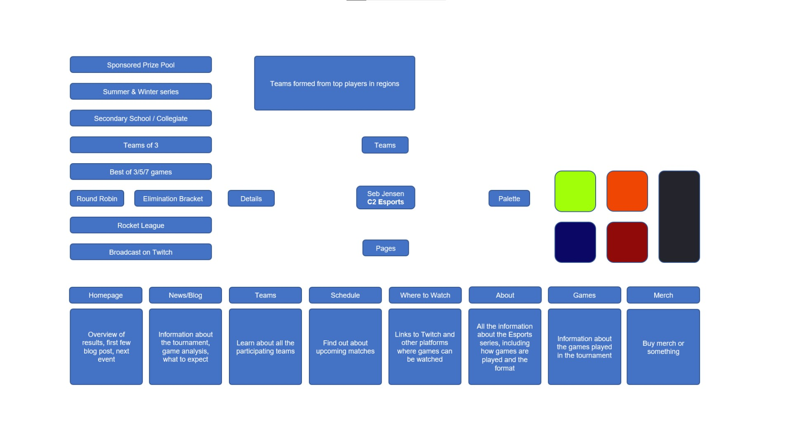
With a couple of wireframes complete, I produced two visualisation diagrams to elaborate on the user experience I laid out. These were created with Microsoft's PowerPoint software with the various shape and text box tools, and will be representative of the product's final design.
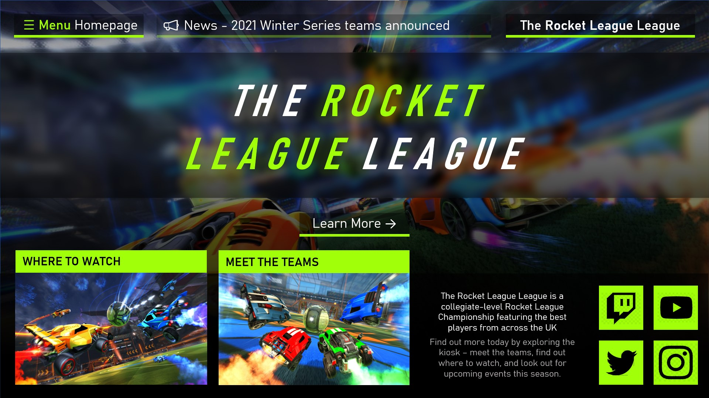
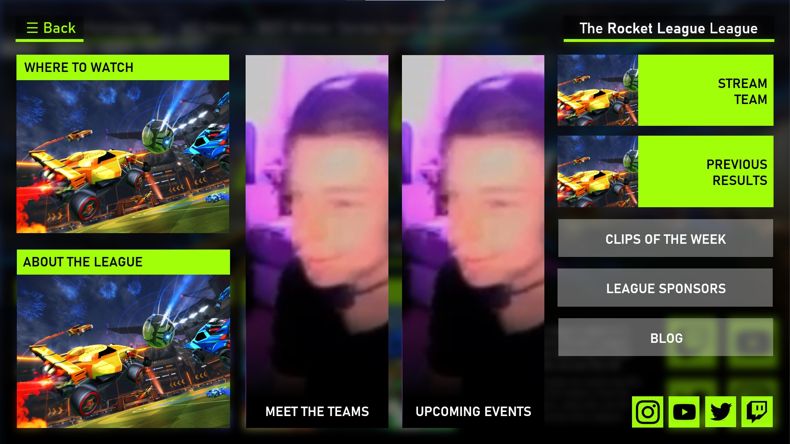
I have created a splash / intro screen to be displayed while the kiosk is inactive. It features a looping video in the background to create a sense of movement and elevate engagement with those that might be walking past the kiosk in an exhibition, the primary use case for this produce. A repeating animation has been used with the interactive button in the centre of the screen to encourage a user to press it. The kiosk needs to be touch-friendly.
My next step is to implement the intro video that will play when you press the start button. Although I'll be able to use the official video, I may need to trim it with the software.
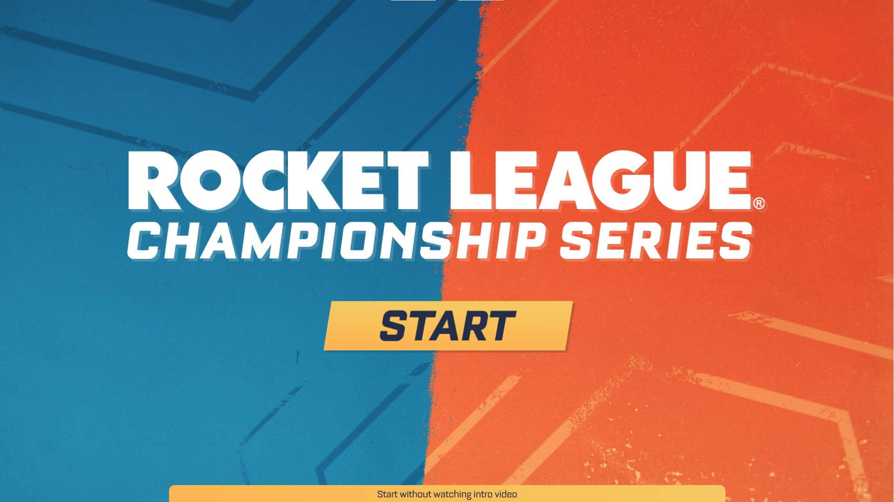
When users press the button to start the kiosk experience, the product transitions to a video that automatically plays upon being displayed. The video introduces the player to the Rocket League Championship Series and is the same video on the official website. On the aforementioned splash screen, there is a button that allows users to skip this video. I have trimmed the video to just under 1 minute in duration for a smoother transition and to prevent users from being held for too long.
My next step is to create the home slide, using the mockup I produced as part of the pre-production process.
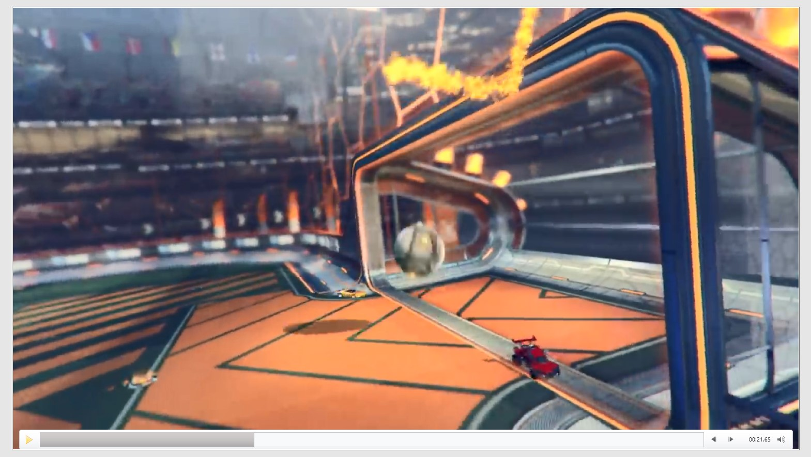
The home screen is what users see after watching the intro video and orientates the user with the kiosk experience. Two of the most prominent pages are displayed as interactive buttons in the lower third of the slide, and a handful of links to Rocket League Esports' social media channels are included. The menu button is in the top left, and users can choose to re-watch the intro video should they wish to.
My next step is to work on the menu slide. I don't think I will use master slide functionality for anything other than to set a uniform font and colour palette. I can use the mockup I created as part of the pre-production process to aid me with the design.
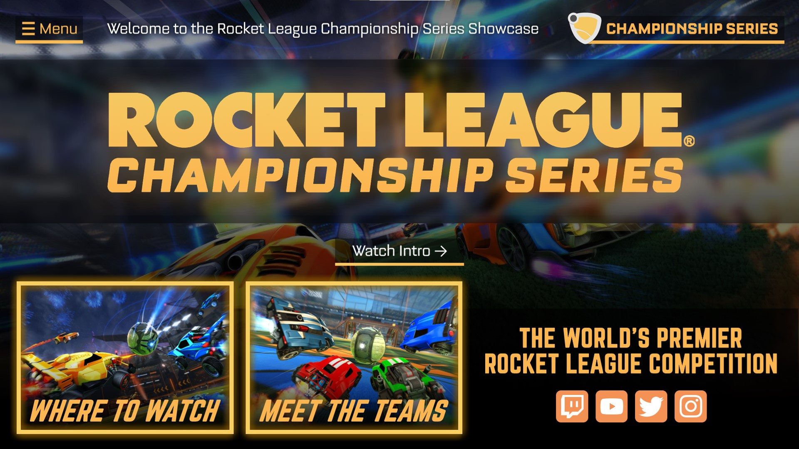
I have opted for creating a dedicated menu page for a friendlier user experience, choosing not to utilise PowerPoint's master slide functionality other than to set a uniform style by adjusting the default fonts and colours. I believe that a separate slide for all the slides promotes discovery as all options are presented to the user. It also means that the buttons can be made bigger, in turn making them easier to read and press. Not all buttons will need to be this large, but it is beneficial in this instance for the menu.
My next steps are to begin work on the various pages that are featured as options in the menu. I would like to incorporate skills I have previously/intend to experiment with, such as triggered animations to create the gallery page.
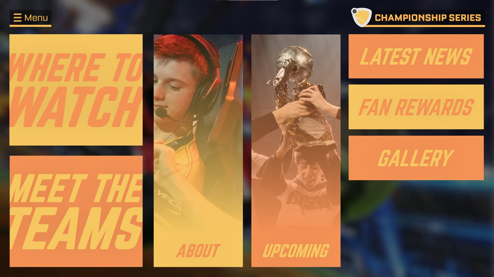
Having experimented with trigger animations previously, I have been able to harness my skills to incorporate a gallery into my product. Users can click on the thumbnail of one of the six screenshots to enlarge it and see a bigger, uncropped version of the image. They can click the thumbnail of the screenshot again to hide its enlarged version.
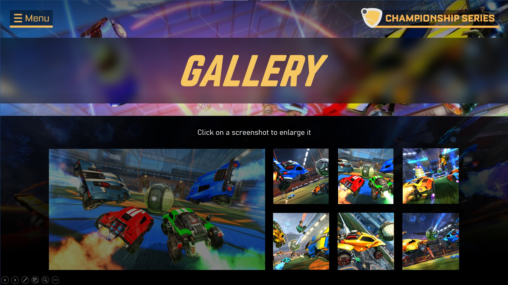
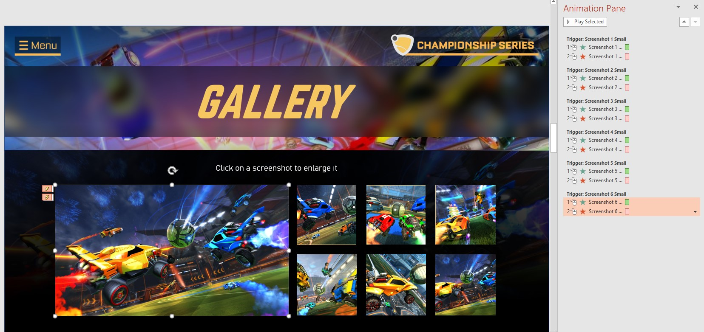
- The Where to Watch page features an array of buttons, allowing users to easily get to find all locations where all the action can be watched live and re-uploaded. There are different Twitch channels for the several new regions included this season, as shown off in the intro video at the start of the kiosk experience. The play button on the left takes users to the main Twitch channel for Rocket League Esports.
- The Teams page displays several prominent teams competing in the Rocket League Championship Series. There is some copy, created by myself, to promote team sign-up for kiosk users who now have an interest in competing in the tournament. This is accompanied by an interactive button to take users to the official website.
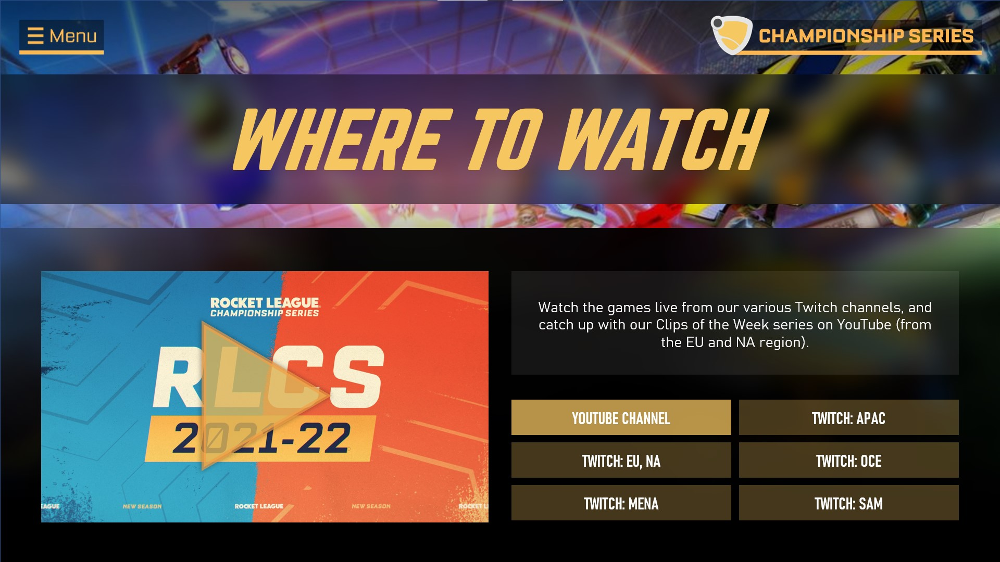
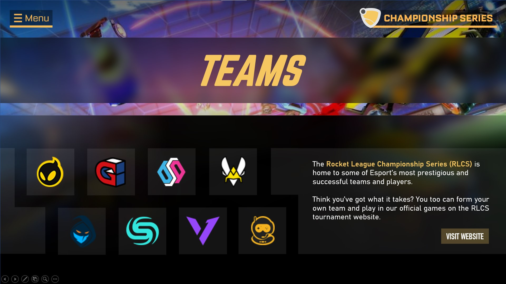
- The About RLCS page includes copy from the official website that I am adapting for a difference audience in the form of a kiosk. This offers a concise introduction to the championship, building onto the information from the intro video and home page.
- The Upcoming Events page details the next official event that will be taking place as part of the Rocket League Champhionship Series. There is a brief description about the event, a team list, and information about the date and time. Pressing the play button will take the user to the official Twitch stream, circumventing the Where to Watch page where reasonable.
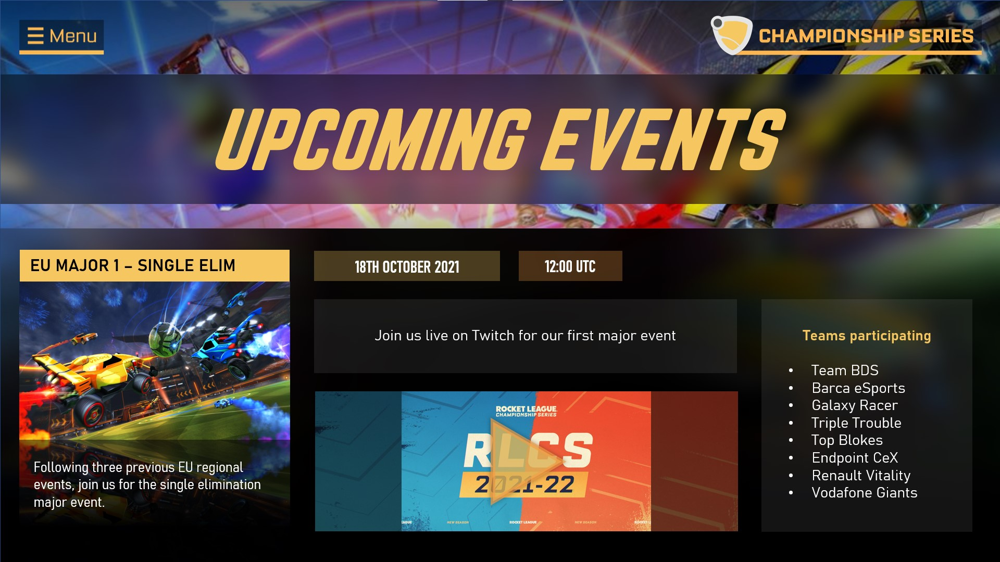
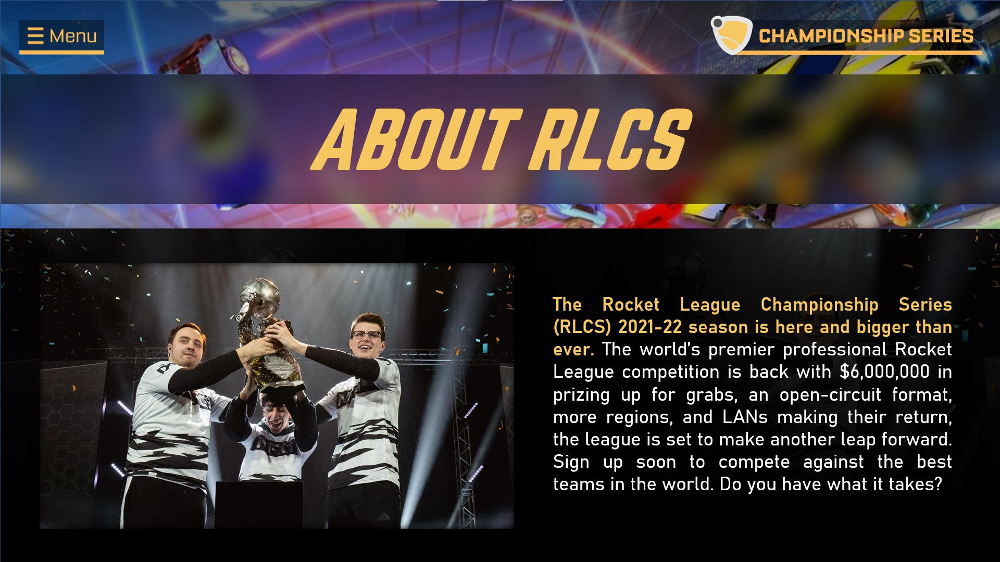
- The About RLCS page includes copy from the official website that I am adapting for a difference audience in the form of a kiosk. This offers a concise introduction to the championship, building onto the information from the intro video and home page.
- The Upcoming Events page details the next official event that will be taking place as part of the Rocket League Champhionship Series. There is a brief description about the event, a team list, and information about the date and time. Pressing the play button will take the user to the official Twitch stream, circumventing the Where to Watch page where reasonable.
My next step is to draw up testing plans and specifications and run through all desired product functionality, looking for any unexpected output wherever possible. If there are any issues, I can rectify these as part of the process.
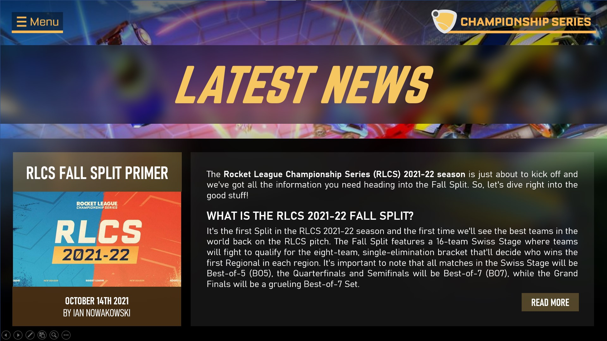
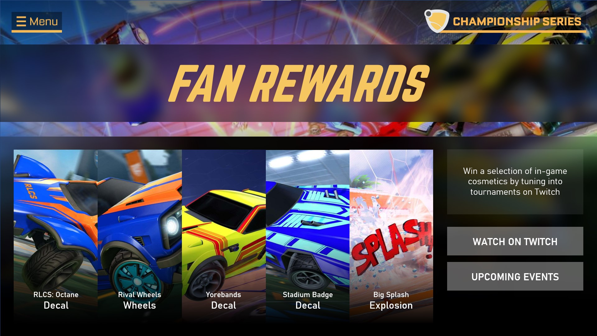
Placeholder
I allowed my peers to use my product and leave feedback. Following this session, I have the following improvements and targets to work towards:
- On the MENU page, change the 'Menu' button text in the top left to something like 'Back'.
- On the MENU page, add a button that takes you to the HOME page.
- On the MENU page, add the social buttons found on the HOME page.
- During the INTRO VIDEO, allow users to skip to the main menu partway through the video.
- Reset the kiosk to the splash screen after a period of inactivity.
Placeholder